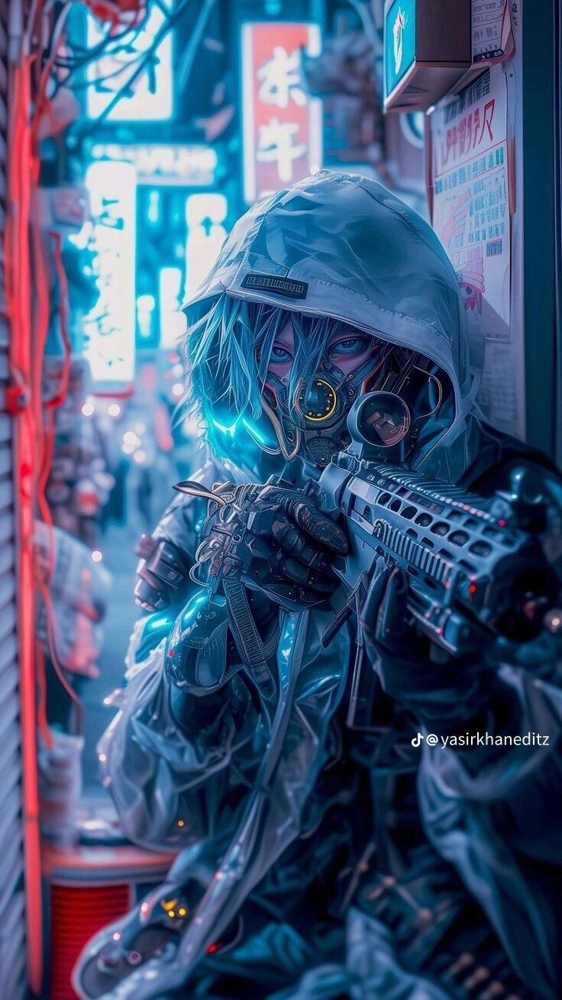

Sniper
Critique: Drenched in the hyper-saturated, electric blue glare of a rain-slicked cyberpunk alleyway, this image is a masterclass in atmospheric tension.
The central figure, a futuristic operative clad in a heavily detailed tactical hood and coat, looks directly down the barrel of a high-tech rifle.
Illuminated by glowing neon signs written in kanji, the ambient light bounces off the wet surfaces, turning the chaotic urban backdrop into a shimmering tapestry of cyan, turquoise, and brilliant white.
Tangles of glowing wires and overhead cables crisscross the frame, building a world that feels dense, dangerous, and technologically overwhelmed.
Every inch of the operative's gear is rendered with obsessive detail, from the metallic respirator covering their face to the glowing tactical optics and reinforced combat gloves.
Blue, luminous light bleeds out from beneath their hood, suggesting cybernetic augmentations that enhance their senses far beyond human limits.
Despite the overwhelming visual noise of the city, the sniper embodies total, absolute stillness—a silent ghost waiting for the single, precise fraction of a second to pull the trigger.
The contrast between the dizzying urban environment and the sharp, dead-center focus of the weapon creates a dramatic narrative hook.
This piece explores the themes of isolation and lethal efficiency in a hyper-connected, dystopian future.
It portrays a world where humanity and machinery have merged into a single, specialized weapon, operating in the shadows of mega-corporations and neon-drenched streets.
The cool color palette enhances the feeling of clinical precision, while the blurred depth of field gives the impression of a living, breathing city pulsing just out of focus.
It is a breathtaking visual spectacle that transports the viewer directly into the heart of a high-stakes, sci-fi thriller.
Praise: The composition draws the viewer’s eye straight down the sights of the weapon, turning us into an unwitting participant in a high-stakes tactical hunt.
Soft drops of rain seem to freeze in mid-air, caught in the brilliant blue reflection of the neon signs hanging above.
The complex textures of fabric, metal, and glass collide seamlessly, creating a tactile depth that makes the cold air of the futuristic city feel almost tangible.
It is a stunning ode to the cyberpunk genre, portraying an urban operative who moves unseen through a world built entirely of electric light and silent shadows.
Behind the metallic respirator and glowing visor, the human identity of the operative remains completely hidden, raising questions about what remains of their soul.
Have they become an emotionless tool of the city, or do they fight for a secret cause hidden beneath layers of encrypted data? The intricate details of the rifle—its vents, rails, and glowing status indicators—speak to a level of tech-craftsmanship that feels grounded yet ahead of our time.
It is a visual triumph of sci-fi worldbuilding, freezing a high-octane moment in time where lethal precision meets neon poetry.
Rating: 8.4 / 10